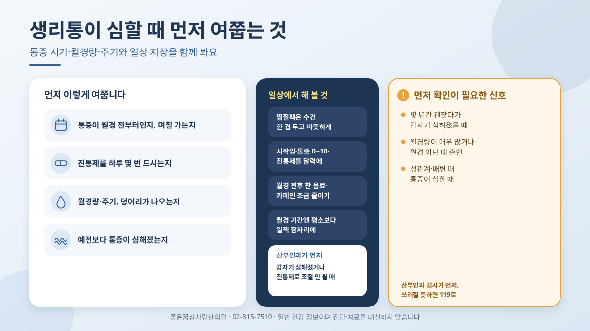

이종호 한의사 감수좋은꿈참사랑한의원 대표원장 (한의사 면허번호 19769)발행 2026-11-26 · 수정 2026-11-26
이 글의 차례
생리 예정일이 다가오면 출근 가방에 진통제와 핫팩부터 챙기시나요? 생리통이 심하다면 저는 통증이 언제 시작해 며칠째 가장 심한지, 진통제를 언제 어떻게 드시는지, 생리량과 주기가 어떤지부터 여쭙습니다. 그리고 몸이 찬지, 소화와 잠은 어떤지를 두세 주기에 걸쳐 함께 봅니다.
다만 몇 해 동안 괜찮다가 갑자기 심해졌거나, 생리 때가 아닌데도 골반이 아프거나, 생리량이 눈에 띄게 늘었다면 산부인과 검사가 먼저입니다. 열이 나면서 아랫배가 심하게 아프거나 한쪽 아랫배가 갑자기 찢어질 듯 아프다면, 이 글을 끝까지 읽기보다 가까운 응급실로 먼저 가세요.
진료실에서는 다들 이 정도는 참고 산다고 들었다며 멋쩍게 웃으시는 분을 자주 만납니다. 그 말씀이 나오기까지 몇 해를 이불 속에서 웅크리고 보내셨을지 생각하면 마음이 쓰입니다. 달마다 돌아오는 통증은 버티는 힘으로 견딜 일이 아니라, 무엇이 겹쳐 있는지 함께 살펴볼 일입니다.
왜 생리 때마다 아랫배가 아플까요
생리가 시작되면 자궁 안쪽을 덮고 있던 막이 떨어져 나옵니다. 이때 자궁 근육을 오므리게 하는 물질(프로스타글란딘)이 함께 나오는데, 이 물질이 많을수록 자궁이 세게 수축합니다. 아랫배를 쥐어짜듯 아프고, 허리나 허벅지 안쪽까지 당기는 것도 그래서입니다.
생리통이 생리 직전이나 첫날에 시작해 하루 이틀 가장 심하고, 2~3일 사이에 잦아드는 경우가 많은 까닭이지요. 같은 물질이 장도 자극해 설사나 메스꺼움, 두통이 함께 오기도 합니다. 생리 때마다 배탈이 난다는 분이 많은 것도 이 때문입니다.
이렇게 특별한 병 없이 생기는 생리통은 대개 첫 생리 뒤 한두 해 안에 시작되고, 10대와 20대에 흔합니다. 자궁내막증, 자궁선근증, 자궁근종처럼 원인이 되는 병이 있을 때는 모양이 조금 다릅니다. 나이가 들어 새로 생기거나, 해마다 세지거나, 생리 때가 아닌데도 골반이 아픈 식입니다.
이 둘을 가르는 일은 산부인과 진찰과 초음파가 합니다. 맥이나 혀로 자궁 안을 들여다볼 수는 없습니다. 그래서 저는 검사를 아직 받지 않으셨는데 통증의 모양이 바뀌었다면, 한의원 진료보다 산부인과 검사를 먼저 권합니다.
한의학 책에서는 생리 때의 아랫배 통증을 통경(痛經)이라 부르며 오래 다뤄 왔습니다. 진료실에서 보면 몸이 차고 긴장한 시기, 잠이 모자라고 끼니가 들쭉날쭉한 시기에 같은 생리통을 더 힘들게 느끼는 분이 많습니다. 생리 전후에 몸살처럼 춥고 아프다는 분도 계십니다.
잠도 빼놓을 수 없습니다. 잠이 모자라면 같은 통증도 더 예민하게 느끼는 경우가 많아, 생리 주간에 야근이나 시험이 겹치면 유난히 힘들다는 말씀이 나옵니다. 그래서 통증을 여쭐 때 그 주에 몇 시에 주무셨는지도 함께 묻습니다.
생리혈이 검고 덩어리지는지도 여쭙습니다. 한의학에서는 멍처럼 피가 뭉친 상태를 흐름이 막힌 것으로 보고 함께 살피기 때문입니다. 맥을 다룬 책도 꼬인 밧줄처럼 팽팽하게 튀는 맥은 냉과 통증 쪽으로, 대나무를 칼로 긁듯 껄끄러운 맥은 피의 흐름이 원활하지 않은 쪽으로 살피라고 적고 있습니다.
그렇다고 맥 이름 하나로 생리통의 원인을 정하지는 않습니다. 저는 맥을 이렇게 설명하곤 합니다. "맥은 그림자입니다. 실체가 아니라, 지금 몸이 어떻게 버티고 있는지 비춰 주는 그림자를 느끼는 것입니다."
아랫배가 찬 느낌이 유난히 크다면 생리 때마다 아랫배가 차고 묵직할 때는 무엇을 먼저 살피나요? 글도 함께 읽어 보세요. 온기를 어떻게 살피는지 따로 적어 두었습니다.
예를 들면 이런 경우입니다
어느 한 분의 이야기가 아니라, 진료실에서 자주 마주치는 모습을 몇 가지 그려 보겠습니다.
예를 들어 고등학생 딸이 생리 첫날마다 조퇴하고 돌아와 하루 종일 누워 있는 경우가 있습니다. 아침은 거르고, 시험 기간이면 새벽까지 깨어 있고, 찬 음료를 달고 사는 때와 겹치는 일이 많지요. 이럴 때는 통증이 몇 시에 시작되는지, 진통제를 언제 먹는지부터 보호자와 함께 여쭙습니다.
예를 들어 서른 중반을 넘기며 예전에 없던 생리통이 해마다 세지고, 생리량도 늘어 밤에 패드를 갈러 일어나는 경우도 있습니다. 이런 모양은 원인이 되는 병이 있는지부터 확인할 신호입니다. 저는 산부인과 검사를 먼저 권하고, 결과를 보며 이어서 살핍니다.
예를 들어 생리 때마다 설사와 더부룩함이 겹치고, 사무실 냉방 아래에서 손발이 얼음장 같은 직장인도 많습니다. 이런 분께는 통증과 함께 하루에 아이스커피를 몇 잔 드시는지, 점심은 몇 시에 드시는지, 몇 시에 주무시는지를 같이 여쭙습니다.
출근길이 특히 걱정이라면 생리통이 심한 날 출근길 지하철에서 서서 가기 힘들 때는 어떻게 준비하나요?에 미리 챙겨 둘 것을 정리해 두었습니다.
먼저 이렇게 여쭙니다
처음부터 정확하게 말씀하지 못하셔도 괜찮습니다. 제가 하나씩 여쭙겠습니다.
- 통증은 생리 며칠 전부터인가요, 시작과 함께인가요? 며칠째 가장 심하고 언제 잦아드나요?
- 아픈 자리는 아랫배 가운데인가요, 한쪽인가요? 허리나 허벅지 안쪽까지 퍼지나요?
- 진통제는 무엇을, 언제, 하루 몇 번 드시나요? 몇 해 전보다 늘었나요?
- 생리 주기와 양은 어떤가요? 덩어리가 나오거나 색이 검은가요?
- 생리 무렵 설사나 더부룩함, 얕은 잠, 손발과 아랫배의 찬 느낌이 함께 오나요?
- 임신 가능성이 있나요? 피임약이나 다른 호르몬제를 드시나요?
이 가운데 두세 가지만 떠올려 오셔도 이야기가 훨씬 구체적이 됩니다. 임신 가능성과 드시는 약은 침이나 한약을 정하기 전에 꼭 확인해야 해서 처음에 여쭙습니다.
스스로 점검해 보세요
- 진통제를 먹어도 학교나 일을 하루 이상 쉬어야 한다
- 몇 해 전보다 통증이 뚜렷이 세졌거나, 진통제 먹는 날이 늘었다
- 생리 기간이 아닐 때도 아랫배나 골반이 아프다
- 한두 시간마다 패드를 갈아야 할 만큼 양이 많거나, 7일 넘게 이어진다
- 성관계 때 배 깊은 곳이 아프다
- 생리 무렵 설사나 더부룩함이 겹치고 손발이 차다
- 생리 기간마다 잠이 얕아지고 기운이 크게 떨어진다
앞의 다섯 가지 가운데 하나라도 해당한다면 산부인과 검사를 먼저 받아 보세요. 뒤의 두 가지는 몸 전체의 리듬과 이어진 이야기라, 진료 때 말씀해 주시면 함께 살피기가 쉬워집니다.
진통제는 참지 말고, 상의하며 쓰세요
진통제를 버틸 때까지 버티다가 도저히 안 될 때 드신다는 분이 많습니다. 약에 기대는 것 같아서, 몸에 안 좋을 것 같아서라고들 하시지요. 그런데 생리통 진통제는 통증이 다 올라온 뒤보다 시작될 무렵에 드시라는 안내를 받는 경우가 많습니다.
언제, 얼마나 드실지는 약사나 처방한 의사와 상의해 정해 주세요. 위염이나 위궤양, 천식, 콩팥 질환이 있거나 피를 묽게 하는 약을 드시는 분은 진통제 종류부터 확인이 필요합니다. 빈속에 드시면 속이 쓰릴 수 있어 가볍게라도 먹고 드시는 편이 좋습니다.
한의원 진료를 받는다고 진통제를 끊으실 필요는 없습니다. 드시는 약 이름과 횟수를 알려 주시면 그것을 고려해 방법을 정합니다. 산부인과에서 처방받은 약이 있다면 처방한 의사와 상의 없이 줄이거나 끊지 않습니다.
정해진 양을 지켜 드셔도 통증이 조절되지 않는다면, 그 자체가 산부인과 확인이 필요하다는 신호입니다. 참는 힘이 모자라서가 아니라 확인할 것이 있다는 뜻일 수 있습니다.
일상에서 먼저 해 볼 수 있는 것
저는 생리 당일만큼 그 앞 일주일도 챙겨 보시라고 말씀드립니다. 생리가 시작된 뒤에 할 수 있는 일보다 그 전에 해 둘 수 있는 일이 더 많기 때문입니다.
- 생리 예정일 며칠 전부터 아랫배와 허리를 따뜻하게 감싸기(찜질팩은 수건을 한 겹 두고, 잠들 때는 떼어 두기)
- 끼니를 거르지 않고, 찬 음료와 아이스커피 대신 미지근한 물 마시기
- 저녁에 20~30분, 옆 사람과 이야기할 수 있을 만한 속도로 걷기
- 잠들기 1~2시간 전 따뜻한 물에 몸 담그기(생리 중에는 따뜻한 샤워나 족욕으로 대신)
- 생리 기간에는 평소보다 30분쯤 일찍 잠자리에 들기
- 통증이 심한 첫날에는 일정을 조금 느슨하게 잡기
한꺼번에 다 하려고 하면 오래가기 어렵습니다. 저는 큰 목표를 잘 드리지 않는 편입니다. 이번 주기에는 찬 음료 줄이기 하나, 다음 주기에는 저녁 걷기 하나, 이렇게 한 가지씩 붙여 보시면 됩니다.
찜질은 따뜻하다고 오래 대고 있으면 저온 화상이 생길 수 있습니다. 진통제를 드셨거나 졸릴 때는 감각이 둔해지니 한 곳에 오래 두지 마세요. 걷기나 스트레칭은 통증이 심한 날 억지로 하기보다, 덜한 날 가볍게 이어 가시길 권합니다.
한의원에서 함께 살필 수 있는 경우
- 산부인과 검사에서 큰 이상이 없다고 들었지만 매달 통증이 반복되는 경우
- 생리통과 함께 손발과 아랫배가 차고, 생리 무렵 설사나 더부룩함이 겹치는 경우
- 생리 기간마다 잠이 얕아지고 기운이 크게 떨어지는 경우
- 자궁근종이나 자궁내막증으로 산부인과 치료를 이어 가면서, 잠과 소화 같은 생활 리듬도 함께 살피고 싶은 경우
처음 오시면 통증의 시기와 세기, 진통제, 생리량과 주기, 산부인과 검사 여부와 임신 가능성을 먼저 여쭙습니다. 그다음 양손을 올려 달라고 말씀드립니다. 저는 처음 오신 분이든 다시 오신 분이든 모든 분께 맥을 짚습니다.
양쪽 손목의 세 자리를 가볍게, 조금 깊이, 깊이 눌러 보며 좌우를 견줍니다. 필요하다고 판단되면 혀를 보고, 누우신 채로 배의 긴장과 아랫배·손발의 온기를 살핍니다.
생리량이 많고 어지럽다고 하시면 원내 혈액 검사기로 기본 수치를 보기도 합니다. 다만 진단과 약은 산부인과나 내과에서 받으시도록 안내합니다.
그 뒤 침, 뜸·온열, 한약 상담 가운데 지금 몸에 도움이 될 수 있는 방법을 함께 정합니다. 한약은 대개 15일 정도 드신 뒤 몸의 반응을 듣고 이어 갈지 정하며, 원내에서 달이고 약재는 제가 직접 살핍니다. 몇 번 만에 통증이 줄어든다고 미리 말씀드리지는 않습니다.
생리 중에도 진료를 받으실 수 있습니다. 궁금하시면 생리 중에도 한의원 진료를 받을 수 있나요?를 읽어 보세요. 누워 계시는 동안 배가 차지 않게 덮을 것과 자세도 함께 맞춥니다.
아파서 오시는 곳이지만 제 마음은 늘 같습니다. "우리 한의원은 잘 쉬다가는 곳." 귀가하시기 전에는 다음 생리까지 적어 오실 것을 말씀드립니다.
이렇게 기록해 오시면 상담이 쉬워집니다
생리통은 정작 진료 날에는 멀쩡한 경우가 많아서, 기억보다 기록이 힘이 됩니다. 달력이든 휴대전화 앱이든 편한 곳에 한 줄씩이면 충분합니다.
- 최근 두세 달의 생리 시작일과 끝난 날
- 날마다의 통증 세기(0~10), 가장 아팠던 날과 아픈 자리
- 진통제 이름, 먹은 시각과 횟수
- 생리량 변화(패드를 바꾸는 간격)와 덩어리
- 그 무렵 잠든 시각과 깬 횟수, 대변, 손발이 찬 정도
- 산부인과 검사 결과지가 있다면 그 사본
두세 주기를 나란히 놓고 보면, 통증이 센 달에 무엇이 겹쳤는지가 보이기 시작합니다. 야근이 몰린 달이었는지, 잠이 짧았던 달이었는지요. 그 흐름을 함께 읽고 싶어서 기록을 부탁드립니다.
이런 증상은 먼저 확인이 필요합니다
- 몇 해 동안 괜찮다가 갑자기 심해졌거나, 해마다 세지는 생리통
- 생리 기간이 아닐 때도 이어지는 골반·아랫배 통증, 생리가 아닌 때의 출혈
이런 신호가 있으면 한의원보다 가까운 병원이나 응급실을 먼저 찾으세요.
다음 신호는 기다리면 안 됩니다.
달마다 돌아오는 그 며칠을 혼자 견뎌 오셨다면, 이제는 그 날들을 적어 와 함께 보면 됩니다. 다음에 오시면 지난 생리 첫날 몇 시에 아프기 시작했는지, 진통제는 언제 드셨는지부터 여쭙겠습니다.

여쭙는 것
- 통증은 생리 며칠 전부터인가요, 시작과 함께인가요? 며칠째 가장 심하고 언제 잦아드…
- 아픈 자리는 아랫배 가운데인가요, 한쪽인가요? 허리나 허벅지 안쪽까지 퍼지나요?
- 진통제는 무엇을, 언제, 하루 몇 번 드시나요? 몇 해 전보다 늘었나요?
생활에서 해 볼 것
- 생리 예정일 며칠 전부터 아랫배와 허리를 따뜻하게 감싸기(찜질팩은 수건을 한 겹 두…
- 끼니를 거르지 않고, 찬 음료와 아이스커피 대신 미지근한 물 마시기
- 저녁에 20~30분, 옆 사람과 이야기할 수 있을 만한 속도로 걷기
한의원에서 함께 살필 것
- 산부인과 검사에서 큰 이상이 없다고 들었지만 매달 통증이 반복되는 경우
- 생리통과 함께 손발과 아랫배가 차고, 생리 무렵 설사나 더부룩함이 겹치는 경우
- 생리 기간마다 잠이 얕아지고 기운이 크게 떨어지는 경우
먼저 확인이 필요한 신호
- 몇 해 동안 괜찮다가 갑자기 심해졌거나, 해마다 세지는 생리통
- 생리 기간이 아닐 때도 이어지는 골반·아랫배 통증, 생리가 아닌 때의 출혈
한눈에 보는 표
| 구분 | 핵심 |
|---|---|
| 여쭙는 것 | 통증은 생리 며칠 전부터인가요, 시작과 함께인가요? 며칠째 가장 심하고 언제 잦아드나요? 아픈 자리는 아랫배 가운데인가요, 한쪽인가요? 허리나 허벅지 안쪽까지 퍼지나요? |
| 생활에서 해 볼 것 | 생리 예정일 며칠 전부터 아랫배와 허리를 따뜻하게 감싸기(찜질팩은 수건을 한 겹 두고, 잠들 때는 떼어 두기) 끼니를 거르지 않고, 찬 음료와 아이스커피 대신 미지근한 물 마시기 |
| 한의원에서 함께 살필 것 | 산부인과 검사에서 큰 이상이 없다고 들었지만 매달 통증이 반복되는 경우 생리통과 함께 손발과 아랫배가 차고, 생리 무렵 설사나 더부룩함이 겹치는 경우 |
| 먼저 확인이 필요한 신호 | 몇 해 동안 괜찮다가 갑자기 심해졌거나, 해마다 세지는 생리통 생리 기간이 아닐 때도 이어지는 골반·아랫배 통증, 생리가 아닌 때의 출혈 |
자주 묻는 질문
진통제를 먹으면서 한의원 진료를 받아도 되나요?
네. 드시는 진통제 이름과 횟수를 알려 주시면 함께 고려합니다. 진통제는 참으며 미루지 마시고, 먹는 때와 양은 약사나 처방한 의사와 상의해 주세요.
산부인과에서 이상이 없다는데 왜 계속 아플까요?
특별한 병이 없어도 생리 때 자궁이 수축하며 아플 수 있습니다. 몸의 온기와 소화, 잠이 함께 흔들리는지 두세 주기 기록을 보며 살핍니다.
생리 중에도 진료를 받을 수 있나요?
네. 생리 중인 날의 상태를 직접 여쭙고 살필 수 있습니다. 몸이 너무 힘드시면 날짜를 바꾸셔도 되니 방문 전 전화(02-815-7510)로 말씀해 주세요.
학생인 딸이 생리통이 심한데 같이 가도 되나요?
네. 보호자와 함께 오시면 통증이 시작되는 시각과 아침 식사, 학교에서 지내는 모습을 함께 여쭙습니다. 학교를 자주 쉴 만큼 아프다면 산부인과 상담도 함께 받아 보세요.
좋은꿈참사랑한의원은 재진 때 지난번 이야기부터 이어서 여쭙니다. 진료시간과 예약은 오시는 길에서 확인하세요.
어디서 상담받을 수 있나요?
좋은꿈참사랑한의원은 서울 동작구 만양로2길 2 신성빌딩 3층·5층(서울 동작구 상도동, 7호선 상도역 3번 출구 근처)에 있습니다. 한의사 3명(이종호 대표원장, 조영기 수석진료원장, 정원영 진료원장)이 진료합니다. 진료시간은 평일 09:30~20:00(점심 13:00~14:00), 토·일·공휴일 09:30~15:00이며, 방문 전 전화로 확인을 권합니다. 예약은 네이버 예약, 카카오톡 상담, 전화 02-815-7510로 받습니다.
이 글은 일반적인 건강 정보이며 개인의 진단이나 치료를 대신하지 않습니다. 증상이 있거나 복용 중인 약이 있다면 진료를 통해 확인하세요. 치료 효과는 개인마다 다를 수 있습니다.
작성 기준: 일반적으로 알려져 있는 건강 정보를 참고해 정리했습니다(대표원장 감수). 증상 기록은 1~2주 동안 하루 1회, 비슷한 시간에 적어 오시면 지난 상태와 비교하기 쉽습니다.